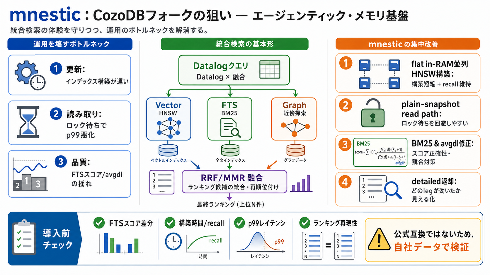

更新
インデックス構築がボトルネック

CozoDBフォークの狙い
mnesticは、CozoDBの設計思想を維持しつつ、性能・正確性・運用（特に検索/インデックス/同時実行）を厚く直す“エージェンティック・メモリ”基盤のフォークです。導入前は、差分（特にFTSスコアの挙動）を必ず確認する必要があります。
ボトルネックが運用を壊す
AI検索では「構築が遅い」「読み取りがロック待ちでブレる」「スコアが揺れて再現性が崩れる」が、評価と運用の両方を痛めます。mnesticは、その“壊れやすい箇所”へ集中投資しています。
更新
インデックス構築がボトルネック
読み取り
ロック待ちでp99が悪化
品質
FTSスコア/avgdlの誤差がランキング揺れ
“記憶”は精度と運用
エージェントの記憶基盤では、検索の速さだけでなく「なぜその結果か」が説明でき、更新と読み取りが安定していることが重要です。mnesticは、検索融合とスコアリング、そして読み取り経路を同時に整えています。
精度（Accuracy） / 正確性
BM25化、avgdlの競合修正（スコアの正しさ）
運用（Ops） / 実運用
plain-snapshot read pathでロック待ちを回避しやすく
統合検索の基本形
CozoDB（およびmnestic）は、トランザクション対応のリレーショナル×グラフ×ベクトル検索を、再帰を扱えるDatalogで問い合わせます。ベクトル（HNSW）、全文検索（FTS）、グラフ探索を一体で扱い、融合（RRF/MMR）で返します。
Vector
HNSW（近傍探索）
FTS
BM25（BM25化 / BM25）
Graph
近傍（graph proximity）を融合
0.8.5の主戦場
0.8.5では、flatなon-memory並列HNSWインデックス構築を採用し、構築時間短縮とrecall維持を同時に狙っています。並列挿入→連続領域の構成→オンディスクへシリアライズ、という方針です。
狙い / Goal
更新が“重い”状態を運用可能にする
効果 / Impact
合成データ・実埋め込みで構築短縮とrecall@10維持を提示
待ちを減らす読み取り
0.8.5では、読み取り専用スクリプトでplain-snapshotを使い、悲観的トランザクションやロック帳簿のオーバーヘッドを避ける設計です。HNSW探索でもMultiGetで近傍ベクトル取得をまとめる方針が示されています。
嬉しさ / Benefit
読み取りが書き込みロック待ちに巻き込まれにくい
効く場面
“読んで書く/読んで評価する”が多いエージェント・メモリ
品質はスコア計算で決まる
0.8.3〜0.8.4では、FTSのスコアリング（BM25化）とavgdlの扱いが修正され、品質と同時実行性に直結する問題を解消しています。特にavgdlカウンタの競合で更新が失われ得る点をプロセスキャッシュへ置き換えています。
変更
BM25正確化
変更
avgdl計算のO(1)化
変更
競合修正（durable avgdlカウンタ問題）
融合を“見える化”
ハイブリッド検索はRRF/MMRで一括融合され、graph proximity legもエンジン内で統合されます。さらにdetailed返却により、寄与内訳（fused_score再構成に対応）を得られ、説明可能性とデバッグ性が上がります。
説明可能性 / 可観測性
“どのlegが効いたか”を追跡
運用メリット
ランキング原因究明→データ改善のループを回しやすい
導入前に押さえる差分
mnesticはCozoDB“互換”を意識しつつも公式推奨ではありません。0.8.3〜0.8.5の変更は、スコア結果・応答性・運用性に差を生む可能性があります。
i. スコア
FTSのデフォルトスコア種（BM25）やavgdl方式の差でランキングが変わり得る
ii. 性能
flat parallel構築・read path変更で構築/レイテンシの性質が変わり得る
iii. 同時実行
ロック競合の抑制（p99）やカウンタ更新の確実性に影響し得る
iv. 互換性
FTSスコア挙動など体験差が出るため、差分ドキュメントの確認が必須
“公式互換”ではない
README冒頭で、mnesticは公式ではなくCozoDBと提携・推奨もされていないと明記されています。互換を期待しつつも、特にFTSスコアのデフォルト挙動などは“同じ結果”になるとは限りません。
期待できること
上流仕様の参照・近い利用体験（可能性）
注意点
差分がランキング/評価指標に影響し得る（特にスコア計算）
評価の現実的な限界
READMEは改善内容とベンチマークを多く示しますが、ベンチ条件（データ分布、ハードウェア、設定、同時実行度、メモリ制約）の前提が限定的です。さらにコードレベル根拠（HNSWメモリレイアウト等）はCHANGELOG-FORK.mdや各バージョンでの確認が必要です。
再現性
同様の改善が出る保証はREADMEだけでは確定できない
追加確認
CHANGELOG-FORK.md、各リリースの項、設定値を“自社ワークロード”でテスト
採用判断の要点
mnesticは、性能だけでなく「FTSスコアの正確性」と「avgdl競合」「読み取りのロック回避」まで含めて同時に改善しようとしています。導入するなら、FTSデフォルト/スコア差分とロック・トランザクション挙動を、テスト環境で再現性ある形で検証してください。
次のアクション
CHANGELOG-FORK.mdで差分（FTSスコア種、avgdl、index/read path）を確認→自社データで再評価
チェック項目
構築時間/recall、p99レイテンシ、ランキング再現性（同一クエリでの差）
No references found